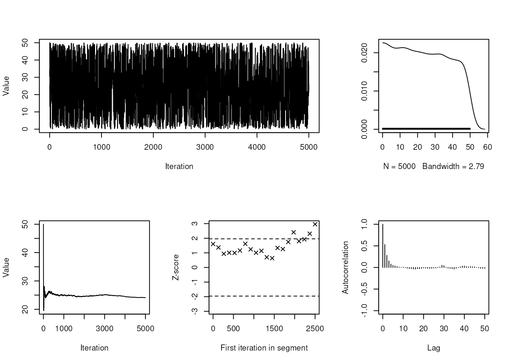

Automated workflow for incorporation and evaluation of data uncertainty in ecological networks
Gemma Gerber
2023
Source:vignettes/autoLIMR_vignette.Rmd
autoLIMR_vignette.RmdIntroduction
Data variability is an inherent part of ecosystem models. To include data uncertainty in model outputs, a popular method is to solve multiple plausible representations of the model. The multiple plausible representations each represent a plausible configuration of flow values given the ecological input constraints. Together, the ensemble of plausible model representations capture the inherent ecological variability, enabling increased realism of model outputs and interpretations.
Multiple plausible ecological networks are frequently solved using linear inverse modelling with Markov Chain Monte Carlo (LIM-MCMC) with R packages LIM (van Oevelen et al., 2010), and embedded R package limSolve (Soetaert et al., 2009). To use these packages, all input data on network structure (compartments and directed flows) and flow constraints (lower and upper bounds) need to be manually coded into linear equations and declared in particular sections in a LIM-readable text file, the so-called LIM declaration file (van Oevelen et al., 2010). This becomes less manageable in terms of complexity and time as network size increases.
Further, the evaluation of how well the multiple plausible food webs represent the ecological input data (model quality) needs to be assessed. In ecological modelling, model quality is often assessed with trace plots (Van den Meersche et al., 2009; van der Heijden et al., 2020) and interpretations of convergence of each flow mean and standard deviation values to a stable value (Bell et al., 2017; de Jonge et al., 2020) or not reported at all. While these diagnostics provide some indication of LIM-MCMC algorithm performance, they neglect critical measures of algorithm performance, such as precise measures of mixing or autocorrelation (the degree to which samples are correlated), limiting the confidence that the model outputs are fully representative of the ecological input data.
To overcome the hurdles of input file construction, and evaluation of multiple plausible networks in ecological modelling, we developed R package autoLIMR: an inclusive and automated workflow to (1) create input files, (2) generate multiple plausible food web flow values, (3) pack solved flow values into network objects for network analysis and visualisation, and (4) evaluate solved flow values (‘model quality’) with established MCMC convergence diagnostics. We describe the latest package version and apply it to an empirically inspired four-compartment food web time series of four seasonal time steps (‘Summer’, ‘Autumn’, ‘Winter’, ‘Spring’).
While our example focuses on ecological networks, autoLIMR applications is flexible and easily adaptable to a variety of system science disciplines. By removing barriers in the network construction and evaluation process, autoLIMR can improve the uptake of LIM techniques in network modelling, and the quality of constructed networks.
Software Requirements & Getting Started
The latest version of autoLIMR can be installed from GitHub. autoLIMR dependencies are automatically installed, including cellranger (>= 1.1.0) (Bryan, 2016), readxl (>= 1.4.1) (Wickham and Bryan, 2022), and utils (>= 4.2.1) (R Core Team, 2022).
devtools::install_github("gemmageber/autoLIMR")
library(autoLIMR)autoLIMR workflow overview
An ecosystem network consists of the biomass of each functional group
or species, their energy or nutrient requirements and outputs, and their
trophic interactions. These data are collected before using
autoLIMR (e.g., see Fath et al., 2007; Scharler &
Borrett, 2021 for instructions on network construction). The first step
to using autoLIMR is to consolidate the data into two
Excel workbooks (.xlsx) or two CSV documents
(.csv) containing network input data on compartments,
biomasses, and metabolic constraints (Workbook 1), and the proportional
diet and egestive flows between compartments (‘who eats who and by how
much’, Workbook 2) (Figure @ref(fig:workflow)). After that, the
autoLIMR workflow consists of three core R
functions.
The first function, autoGen(), translates network data
into LIM declaration files compatible with R packages LIM and limSolve.
Function autoGen() imports network data from the two
workbooks, translates the data into linear equations describing network
topography and parameters, arranges them in multiple ‘LIM Declaration
files’ (‘.R’ file extension) each representing one network model, and
writes these files to the computer hard drive.
The second core function, multi_net(), solves multiple
plausible networks for each network model described by a LIM declaration
file. Function multi_net() uses LIM-MCMC methods from R
packages LIM and limSolve to
simulate a user-defined number of plausible solutions valid within the
ecologically derived input data constraints. With the
multi_net() function, users can toggle the LIM-MCMC
algorithm parameters (starting point, jump size, iterations). The result
of the multi_net() function is an R list of combined model
output items, including 1) metadata, 2) a table of solved food web flow
values, and 3) solved values packed into network objects.
The third and final core function, mcmc_diags(),
evaluates the quality of the multiple plausible networks, i.e., how well
the networks represent the input data constraints, using several Markov
Chain Monte Carlo (MCMC) convergence diagnostics. To statistically
assess MCMC convergence of every flow of the multiple plausible
networks, function mcmc_diags() applies six different MCMC
convergence diagnostics and returns the output in a list. The
convergence diagnostic outputs, when assessed together, provide a
holistic assessment of three main criteria of convergence (stationarity,
mixing, and sampling efficiency). An additional function,
mcmc_plots(), plots five visual diagnostics for a single
flow simultaneously. This is useful to assess convergence of a few flows
of research interest, rather than all flows at once.
![_Main workflow of R package __autoLIMR__. First, network data is consolidated into two main workbooks. Next, function `autoGen()` constructs LIM declaration files for each network described in the input workbooks. Function `multi_net()` solves multiple plausible networks for each network defined by a LIM declaration file. Model quality of the multiple plausible networks is then assessed with visual (`mcmc_plots()`) and statistical (`mcmc_diag()`) Markov Chain Monte Carlo (MCMC) convergence diagnostics. Once the multiple plausible networks have been deemed ‘good’ quality, network visualisation and analysis can be applied to the multiple plausible networks using existing R packages_](images%2Fmainworkflow.png)
Main workflow of R package autoLIMR. First, network
data is consolidated into two main workbooks. Next, function
autoGen() constructs LIM declaration files for each network
described in the input workbooks. Function multi_net()
solves multiple plausible networks for each network defined by a LIM
declaration file. Model quality of the multiple plausible networks is
then assessed with visual (mcmc_plots()) and statistical
(mcmc_diag()) Markov Chain Monte Carlo (MCMC) convergence
diagnostics. Once the multiple plausible networks have been deemed
‘good’ quality, network visualisation and analysis can be applied to the
multiple plausible networks using existing R packages
User Guide
We describe how to use autoLIMR using a theoretical four-compartment network, describing the network interactions and flow constraints over seasonal time-steps of Winter, Spring, Summer, and Autumn (Figure @ref(fig:network)).

Conceptual four-compartment network with flows describing exchanges between compartments within and across a defined system boundary
Network construction with autoLIMR
Prior to using autoLIMR, all network data are calculated to a specific model currency or defined as simple proportions of another variable (Fath et al., 2007; Scharler and Borrett, 2021). In our example, the model currency is in units of carbon, i.e., mg C·m–2 for compartment biomasses, and mg C·m–2·day–1 for flows. This informtion will be used to create LIM declaration files, which are the necessary input files for solving mulriple plausible networks with LIM (van Oevelen et al., 2010), and embedded R package limSolve (Soetaert et al., 2009).
autoLIMR requires the user to differentiate and store the required network data in two separate Excel documents: 1) contains all ‘Network Input Data’, and 2) contains all internal compartment interactions in ‘Adjacency Matrix’. In each document, each sheet corresponds to one network, and each sheet should be named uniquely, and matched identically between the two documents. Both documents should be saved in the active R session working directory. We go through each document in detail below.
Network Input Data Workbook
The first workbook contains network information on: 1) internal compartment names, 2) their respective biomasses, and 3) compartment-specific metabolic constraints. Each sheet will contain all the network information relating to that specific network (Figure @ref(fig:input)).
autoLIMR requires the final list of internal
compartments to be listed under column ‘Compartment’, and respective
biomasses under the column ‘Biomass’. The network information is listed
under separate column headings, with each row hosting the information
for a particular compartment. The network information describes lower
and upper bounds for inputs and outputs of each living compartment if
these values are available. If only equalities exist for the particular
parameter, the should be entered as both lower and upper values.
autoLIMR understands compartment inputs and outputs as
Consumption (Q) (or the equivalent gross primary production (GPP) in the
case of primary producers), Production (P) (or the equivalent Net
Primary Production (NPP) in the case of primary producers), unused
material/energy (egestion and mortality combined) (U), and assimilation
efficiency (AE) (as a fraction of total consumption). The values can be
absolute values, or simple proportions of another variable e.g.,
Plant_R = 0.02 * Plant_NPP. If the metabolic parameter
values are not available, the user leaves these blank, and no
constraints for Q, P, U, or AE (or primary producer equivalents) are
generated by autoLIMR.
For all compartments that feature imports (IM) and exports
(EX) across the system boundary the user inputs lower and upper
inequalities in separate columns. If a compartment receives an import or
export, but the inequalities are not known, the user inputs a
1 in the respective column.
![_Network input data sheet Winter example, showing pre-calculated data describing the food web model compartments, biomasses, and metabolic constraints entered a named Excel spreadsheet. Column headings describe the metabolic data in the column, and each row corresponding to one compartment. Each named spreadsheet corresponds to a seperate network ('Winter', 'Spring', 'Summer', 'Autumn'), each containing all relevant network-specific information. __autoLIMR__ accepts both character and numeric input from the spreadsheet._](images%2Fnetinputwinter.png)
Network input data sheet Winter example, showing pre-calculated data describing the food web model compartments, biomasses, and metabolic constraints entered a named Excel spreadsheet. Column headings describe the metabolic data in the column, and each row corresponding to one compartment. Each named spreadsheet corresponds to a seperate network (‘Winter’, ‘Spring’, ‘Summer’, ‘Autumn’), each containing all relevant network-specific information. autoLIMR accepts both character and numeric input from the spreadsheet.
To view the network input data for all seasons, the example network
data provided with autoLIMR can be fetched with
demo_net_input(). The demo network data input is a list of
four data tables containing network data input for ‘Winter’, ‘Spring’,
‘Summer’, and ‘Autumn’ four-compartment networks.
Adjacency Matrix Data Workbook
In the ‘Adjacency Matrix Input’ workbook, flows between source (row
i) and recipient (column j) are defined by
1 (Figure @ref(fig:admat)). If the proportions of
compartmental inflow from different sources are provided, these can
instead be entered as a constraint in the form of lower value, upper
value. For example, 0.2,0.5 indicates that a specific
flow comprises 20 - 50 % of compartment j’s total consumptive
input. If only the lower proportion is known, it can be entered as
lower value, 1, e.g., 0.2, 1 indicates that the
flow contributes a minimum of 20 % and a maximum of 100% to total
consumption. If only the upper diet proportion is known, it can be
entered as the constraint upper value or 0, upper
value (e.g., 0.6 or 0, 0.6 – indicating
that the flow contributes a maximum of 60 % to total consumption). R
packages LIM and limSolve do not use flow values below or equal to zero
(van Oevelen et al., 2010).

Adjacency matrix data Winter example, describing flows and flow constraints from compartment in row i to compartment in column j. Each named spreadsheet corresponds to a seperate network (‘Winter’, ‘Spring’, ‘Summer’, ‘Autumn’), each containing all relevant network-specific information. autoLIMR accepts both character and numeric input from the spreadsheet.
To view the adjacency matrix data for all seasons, the example
adjacency matrix data provided with autoLIMR can
fetched with demo_adj_mat(). The demo adjacency matrix
input is a list of four data tables containing adjacency matrices for
‘Winter’, ‘Spring’, ‘Summer’, and ‘Autumn’ four-compartment networks.
Each adjacency matrix describes internal flows of energy/material from
compartment in row i to compartment in column j.
autoGen(): write LIM declaration files into folders in
working directory
Once both workbooks have been populated, autoGen() uses
data from both workbooks and translates the data into ready-to-use LIM
declaration file formatted objects. Users can choose to manually write
these to the computer hard drive, or can specify
force = TRUE within the argument to give permission to
automatically write to the hard drive.
The translation depends on three main autoGen()
arguments: 1) whether respiration from living compartments to an
external CO2 sink is included in the network (LOGICAL, default
respiration = TRUE), 2) whether each compartment is living
or non-living (character string or vector of inputs, default
NLNode = NULL), and 3) whether each compartment sources its
energy from outside the system boundary e.g., primary producers in
ecological networks (character string or vector of inputs, default
primary_producer = NULL).
A handy demo of autoGen() is included in this package,
using the demo data sets from demo_net_input() and
demo_adj_mat(). Users can simply run the code below, with
the net_data_input = "demo" and
adj_mat_input = "demo" to automatically pull the respective
demo data sets into autoGen() and write the respective
folders of LIM declaration files to the working directory.
autoGen(
net_data_input = "demo",
adj_mat_input = "demo",
NLNode = "Detritus",
primary_producer = "Plant",
respiration = TRUE,
author = "autoLIMR authors",
force = TRUE
)In cases of multiple non-living compartments (Figure @ref(fig:net2)), for example, differentiation between suspended and sedimented particulate organic carbon (susPOC and sedPOC), these can rather be entered as a vector of inputs e.g., c(‘susPOC’, ‘sedPOC’). autoGen() attaches an ‘NLNode’ text string to each of the defined inputs, such that ‘susPOC’ becomes ‘susPOCNLNode’, and ‘sedPOC’ becomes ‘sedPOCNLNode’. Multiple primary-producing compartments can be specified in the same way.

A network consisting of multiple non-living and primary producer
compartments can easily be defined as vectors of inputs within the
autoGen() function. In this example, the
NLNode argument would be defined as
NLNode = c('Detritus_1', 'Detritus_2'), and the
‘primary_producer’ argument as `primary_producer = c(‘Plant_1’,
‘Plant_2’).
An example of the Winter weighted LIM declaration output from autoLIMR:
! Weighted Network
! Network LIM Declaration File
! Composed with autoLIMR
! Author: gemma
! Date: 2023-06-17
! Respiration included: Yes
! U included: Yes
! Living compartments: 3
! Non-living compartments: 1
! External compartments: 7
! Boundary flows: 10
! Internal flows: 6
! Abbreviations
! GPP = Gross Primary Production (Primary Producers only)
! Q = Consumption
! NPP = Net Primary Production (Primary Producers only)
! P = Production
! R = respiration
! U = Passive flows to non-living compartments/Unassimilated material
! AE = Assimilation Efficiency
! IM = Import flow
! EX = Export Flow
! NLNode = Non-living compartment
### COMPARTMENTS
Invert = 822
Plant = 500
Vert = 222
DetNLNode = 7111
### END COMPARTMENTS
### EXTERNALS
CO2
DetNLNodeImport
PlantImport
DetNLNodeExport
InvertExport
PlantExport
VertExport
### END EXTERNALS
### VARIABLES
! Consumption (Q) / Gross Primary Production (GPP) Variables
Invert_Q = Flowto(Invert)
Plant_GPP = Flowto(Plant) - Plant_IM
Vert_Q = Flowto(Vert)
! Production (P/NPP) Variables
Invert_P = Flowfrom(Invert) - Invert_R - Invert_U - Invert_EX
Plant_NPP = Flowfrom(Plant) - Plant_R - Plant_U - Plant_EX
Vert_P = Flowfrom(Vert) - Vert_R - Vert_U - Vert_EX
! Unused Energy/Material (U) Variables
Invert_U = Flowto(Invert) - Invert_P - Invert_R - Invert_EX
Plant_U = Flowto(Plant) - Plant_NPP - Plant_R - Plant_EX
Vert_U = Flowto(Vert) - Vert_P - Vert_R - Vert_EX
### END VARIABLES
### FLOWS
! GPP flows
Plant_GPP: CO2 -> Plant
! Respiration flows
Plant_R: Plant -> CO2
Invert_R: Invert -> CO2
Vert_R: Vert -> CO2
! Import flows
DetNLNode_IM: DetNLNodeImport -> DetNLNode
Plant_IM: PlantImport -> Plant
! Export flows
DetNLNode_EX: DetNLNode -> DetNLNodeExport
Plant_EX: Plant -> PlantExport
Invert_EX: Invert -> InvertExport
Vert_EX: Vert -> VertExport
! Adjacency Matrix flows
DetNLNode_Q_Invert: DetNLNode -> Invert
Invert_Q_Vert: Invert -> Vert
Invert_U_DetNLNode: Invert -> DetNLNode
Plant_Q_Invert: Plant -> Invert
Plant_U_DetNLNode: Plant -> DetNLNode
Vert_U_DetNLNode: Vert -> DetNLNode
### END FLOWS
### INEQUALITIES
! Network Data Input Inequalities
Plant_GPP > 700
Plant_GPP < 1000
DetNLNode_IM < 0.1*DetNLNode
Plant_IM < 0.1*Plant
DetNLNode_EX < 0.1*DetNLNode
Plant_EX < 0.1*Plant
Invert_EX < 0.1*Invert
Vert_EX < 0.1*Vert
! Adjacency Matrix Inequalities
DetNLNode_Q_Invert = Invert_Q * [0.01,0.6]
Plant_Q_Invert < Invert_Q * 0.6
Invert_Q_Vert = Vert_Q * [0.6,1]
### END INEQUALITIESCalculating multiple plausible networks
Function multi_net() uses LIM-MCMC methods from R
packages LIM (van
Oevelen et al., 2010), and limSolve
(Soetaert et al., 2009) to simulate a user-defined number of plausible
solutions valid within the ecologically derived input data
constraints.
With the multi_net() function, users can toggle the
LIM-MCMC algorithm parameters (starting point, jump size, iterations).
The result of the multi_net() function is an R list of
combined model output items, including 1) metadata, 2) a table of solved
food web flow values, and 3) solved values packed into network
objects.
set.seed(1) # Initialise pseudorandom number generator
winter_nets <- multi_net(
file = ‘Winter_Weighted_Network_LIMfile.R’, # The LIM declaration file
x0 = NULL, # The algorithm starting solution
iter = 5000, # Define the number of iterations
jmp = 20, # Define the jump size
pack = TRUE # Pack into network objects
)Evaluate model quality
autoLIMR evaluates model quality using Markov Chain Monte Carlo (MCMC) convergence diagnostics. Together, the diagnostics report three core aspects of MCMC convergence: 1) stationarity - whether the flow has successfully targeted the underlying solution space (posterior) distribution; 2) mixing - whether the samples are effectively integrating over the posterior probability; and 3) sampling intensity - whether enough samples (iterations) have been returned to describe the posterior distribution adequately.
Visual MCMC diagnostics
autoLIMR consist of five different MCMC convergence diagnostic plots for each variable (flow) of the multiple plausible food web networks, namely:
- Trace plot with
trace_plot() - Kernel density plot with
dens_plot() - Running mean plot with
runmean_plot() - Geweke Plot with
geweke_plot() - Autocorrelation plot with
autocorr_plot()
Each plot assesses a different aspect of MCMC convergence and can be
assessed together to provide an enhanced evaluation. While each
autoLIMR visual diagnostic plot function can be used
independently, a convenient summary plot function,
mcmc_plots(), visualises all diagnostics simultaneously
# Fetch LIM declaration file path
fpath <- system.file("example_limfiles",
"Winter_Weighted_Network_LIMfile.R",
package = "autoLIMR")
# Solve multiple plausible networks
# Generates an object of class 'multi_net_object'
set.seed(1)
winter_networks <- multi_net(
file = fpath,
iter = 5000,
jmp = 20,
x0 = NULL
)
#> Initial solution (x0) calculated using default LSEI algorithm (Haskell
#> and Hanson 1981). Solving multiple plausible network values (this may
#> take a while)...
#> user system elapsed
#> 0.120 0.008 0.128
#> Packing multiple plausible values into network objects...
#> Multiple plausible values solved and packed into network objects.
#>
# Plot visual MCMC convergence diagnostics for flow 'Plant_GPP'
# With figure titles
mcmc_plots(x = winter_networks, flow = "Plant_GPP", addtitle = TRUE)
# Plot visual MCMC convergence diagnostics for flow 'Plant_EX'
# Without figure titles
mcmc_plots(x = winter_networks, flow = "Plant_EX", addtitle = FALSE)
Statistical MCMC diagnostics
In addition to visual diagnostics, autoLIMR provides
several statistical MCMC convergence diagnostics to define convergence
more precisely than visual diagnostics. A convenience function,
mcmc_diags(), returns the diagnostic output of six MCMC
convergence diagnostics as a list of data tables. The
mcmc_diags() function can be applied to assess statistical
convergence for all flows of the multiple plausible networks or to
assess one flow at a time.
# Fetch LIM declaration file path
fpath <- system.file("example_limfiles",
"Winter_Weighted_Network_LIMfile.R",
package = "autoLIMR")
# Solve multiple plausible networks
# Generates an object of class 'multi_net_object'
set.seed(1)
winter_networks <- multi_net(
file = fpath,
iter = 5000,
jmp = 20,
x0 = NULL
)
#> Initial solution (x0) calculated using default LSEI algorithm (Haskell
#> and Hanson 1981). Solving multiple plausible network values (this may
#> take a while)...
#> user system elapsed
#> 0.108 0.004 0.113
#> Packing multiple plausible values into network objects...
#> Multiple plausible values solved and packed into network objects.
#>
# Statistical MCMC convergence diagnostics
# All variables (flows) at once
diags <- mcmc_diags(
x = winter_networks # 'multi_net()' object of class ‘multi_net_object’
)
diags_table <- do.call( # Convert list to data frame
cbind, diags
)
diags_table
#> Summary.Mean Summary.SD Summary.Naive SE
#> Plant_GPP 882.17729 87.762663 1.2411515
#> Plant_R 130.66112 102.120690 1.4442047
#> Invert_R 421.82833 240.663482 3.4034956
#> Vert_R 226.46956 192.814916 2.7268147
#> DetNLNode_IM 238.12385 191.654380 2.7104022
#> Plant_IM 25.70271 14.521033 0.2053584
#> DetNLNode_EX 292.76503 213.555083 3.0201250
#> Plant_EX 24.09877 14.459888 0.2044937
#> Invert_EX 39.27781 23.678413 0.3348633
#> Vert_EX 10.90324 6.401996 0.0905379
#> DetNLNode_Q_Invert 691.88615 213.805949 3.0236727
#> Invert_Q_Vert 510.77893 206.368279 2.9184882
#> Invert_U_DetNLNode 333.11253 217.629827 3.0777505
#> Plant_Q_Invert 613.11145 153.989377 2.1777387
#> Plant_U_DetNLNode 140.00866 113.484849 1.6049181
#> Vert_U_DetNLNode 273.40613 133.307951 1.8852591
#> Summary.Time-series SE Summary.2.5% Summary.25% Summary.50%
#> Plant_GPP 14.36450493 710.8650594 809.501634 902.18565
#> Plant_R 18.44825773 5.2365298 51.377048 108.90103
#> Invert_R 88.65976917 16.3107096 220.310288 447.29841
#> Vert_R 67.01564983 8.9026037 86.274089 171.31908
#> DetNLNode_IM 61.30997557 7.0833146 76.862141 189.53395
#> Plant_IM 0.36990494 1.3918586 13.218401 25.99947
#> DetNLNode_EX 72.95552300 12.6927800 110.090803 221.60977
#> Plant_EX 0.36911598 1.1878991 11.576948 23.61489
#> Invert_EX 1.00558705 1.5556305 18.839503 38.26239
#> Vert_EX 0.09469636 0.5488502 5.397847 10.66497
#> DetNLNode_Q_Invert 68.05109271 266.3785672 550.555157 659.90130
#> Invert_Q_Vert 72.37788147 179.1406074 358.493686 483.62809
#> Invert_U_DetNLNode 71.06428176 9.7720011 140.355347 329.34125
#> Plant_Q_Invert 40.39817440 266.7978020 513.088698 607.06836
#> Plant_U_DetNLNode 25.94259179 5.1753799 49.365043 117.86981
#> Vert_U_DetNLNode 35.05307679 20.0451770 183.000314 270.98511
#> Summary.75% Summary.97.5% Summary.Xranges_min
#> Plant_GPP 957.17321 996.18324 700
#> Plant_R 179.68061 388.49522 0
#> Invert_R 593.17702 911.38572 0
#> Vert_R 291.22849 735.81391 0
#> DetNLNode_IM 375.76120 657.41372 0
#> Plant_IM 38.65486 48.76917 0
#> DetNLNode_EX 497.26615 685.60722 0
#> Plant_EX 36.28986 48.75946 0
#> Invert_EX 59.40763 79.77177 0
#> Vert_EX 16.46506 21.65151 0
#> DetNLNode_Q_Invert 869.83251 1082.89505 0
#> Invert_Q_Vert 633.55903 977.53082 0
#> Invert_U_DetNLNode 488.27343 754.05628 0
#> Plant_Q_Invert 724.01698 892.13047 0
#> Plant_U_DetNLNode 193.70635 450.50753 0
#> Vert_U_DetNLNode 376.28522 525.67798 0
#> Summary.Xranges_max Summary.Xranges_central Summary.nvar
#> Plant_GPP 1000.00 794.09688 16
#> Plant_R 1050.00 498.30000 16
#> Invert_R 1761.10 194.61875 16
#> Vert_R 1761.10 110.06875 16
#> DetNLNode_IM 711.10 110.76250 16
#> Plant_IM 50.00 15.62500 16
#> DetNLNode_EX 711.10 111.10938 16
#> Plant_EX 50.00 3.12500 16
#> Invert_EX 82.20 2.56875 16
#> Vert_EX 22.20 0.69375 16
#> DetNLNode_Q_Invert 1575.00 278.97813 16
#> Invert_Q_Vert 2625.00 209.20000 16
#> Invert_U_DetNLNode 2286.10 120.65937 16
#> Plant_Q_Invert 1050.00 248.06875 16
#> Plant_U_DetNLNode 914.44 60.22813 16
#> Vert_U_DetNLNode 2286.10 98.43750 16
#> Summary.niter Summary.nchain Summary.thin Geweke.geweke.diag
#> Plant_GPP 5000 1 1 -3.1533638
#> Plant_R 5000 1 1 1.2459340
#> Invert_R 5000 1 1 -6.8150373
#> Vert_R 5000 1 1 -0.9520618
#> DetNLNode_IM 5000 1 1 -1.6543412
#> Plant_IM 5000 1 1 -0.4841867
#> DetNLNode_EX 5000 1 1 0.1479210
#> Plant_EX 5000 1 1 1.6046186
#> Invert_EX 5000 1 1 1.2729170
#> Vert_EX 5000 1 1 0.9003930
#> DetNLNode_Q_Invert 5000 1 1 -4.5639068
#> Invert_Q_Vert 5000 1 1 -2.9751085
#> Invert_U_DetNLNode 5000 1 1 -1.3283059
#> Plant_Q_Invert 5000 1 1 -3.0918551
#> Plant_U_DetNLNode 5000 1 1 1.8422010
#> Vert_U_DetNLNode 5000 1 1 -1.6672761
#> Geweke.geweke.frac1 Geweke.geweke.frac2
#> Plant_GPP 0.1 0.5
#> Plant_R 0.1 0.5
#> Invert_R 0.1 0.5
#> Vert_R 0.1 0.5
#> DetNLNode_IM 0.1 0.5
#> Plant_IM 0.1 0.5
#> DetNLNode_EX 0.1 0.5
#> Plant_EX 0.1 0.5
#> Invert_EX 0.1 0.5
#> Vert_EX 0.1 0.5
#> DetNLNode_Q_Invert 0.1 0.5
#> Invert_Q_Vert 0.1 0.5
#> Invert_U_DetNLNode 0.1 0.5
#> Plant_Q_Invert 0.1 0.5
#> Plant_U_DetNLNode 0.1 0.5
#> Vert_U_DetNLNode 0.1 0.5
#> effective.sample.size
#> Plant_GPP 37.328304
#> Plant_R 30.641976
#> Invert_R 7.368298
#> Vert_R 8.278064
#> DetNLNode_IM 9.771814
#> Plant_IM 1541.043012
#> DetNLNode_EX 8.568474
#> Plant_EX 1534.631775
#> Invert_EX 554.454421
#> Vert_EX 4570.505486
#> DetNLNode_Q_Invert 9.871187
#> Invert_Q_Vert 8.129693
#> Invert_U_DetNLNode 9.378515
#> Plant_Q_Invert 14.529747
#> Plant_U_DetNLNode 19.135907
#> Vert_U_DetNLNode 14.463048
#> Heidelberger-Welch.HW.Stationarity.Test
#> Plant_GPP Passed
#> Plant_R Passed
#> Invert_R Failed
#> Vert_R Failed
#> DetNLNode_IM Passed
#> Plant_IM Passed
#> DetNLNode_EX Passed
#> Plant_EX Failed
#> Invert_EX Passed
#> Vert_EX Passed
#> DetNLNode_Q_Invert Failed
#> Invert_Q_Vert Passed
#> Invert_U_DetNLNode Passed
#> Plant_Q_Invert Failed
#> Plant_U_DetNLNode Failed
#> Vert_U_DetNLNode Passed
#> Heidelberger-Welch.HW.Start.Iteration
#> Plant_GPP 1001
#> Plant_R 1
#> Invert_R NA
#> Vert_R NA
#> DetNLNode_IM 1
#> Plant_IM 1
#> DetNLNode_EX 1
#> Plant_EX NA
#> Invert_EX 1
#> Vert_EX 1
#> DetNLNode_Q_Invert NA
#> Invert_Q_Vert 2001
#> Invert_U_DetNLNode 1001
#> Plant_Q_Invert NA
#> Plant_U_DetNLNode NA
#> Vert_U_DetNLNode 1
#> Heidelberger-Welch.HW.p.value
#> Plant_GPP 2.519260e-01
#> Plant_R 5.465012e-01
#> Invert_R 5.359721e-03
#> Vert_R 2.199293e-02
#> DetNLNode_IM 5.519047e-01
#> Plant_IM 3.695899e-01
#> DetNLNode_EX 4.491651e-01
#> Plant_EX 2.957928e-03
#> Invert_EX 1.977603e-01
#> Vert_EX 3.340088e-01
#> DetNLNode_Q_Invert 3.091422e-02
#> Invert_Q_Vert 3.538905e-01
#> Invert_U_DetNLNode 5.611920e-02
#> Plant_Q_Invert 1.269107e-03
#> Plant_U_DetNLNode 1.152557e-05
#> Vert_U_DetNLNode 4.754020e-01
#> Heidelberger-Welch.HW.Halfwidth.Test
#> Plant_GPP Passed
#> Plant_R Failed
#> Invert_R <NA>
#> Vert_R <NA>
#> DetNLNode_IM Failed
#> Plant_IM Passed
#> DetNLNode_EX Failed
#> Plant_EX <NA>
#> Invert_EX Passed
#> Vert_EX Passed
#> DetNLNode_Q_Invert <NA>
#> Invert_Q_Vert Failed
#> Invert_U_DetNLNode Failed
#> Plant_Q_Invert <NA>
#> Plant_U_DetNLNode <NA>
#> Vert_U_DetNLNode Failed
#> Heidelberger-Welch.HW.Mean
#> Plant_GPP 908.42775
#> Plant_R 130.66112
#> Invert_R NA
#> Vert_R NA
#> DetNLNode_IM 238.12385
#> Plant_IM 25.70271
#> DetNLNode_EX 292.76503
#> Plant_EX NA
#> Invert_EX 39.27781
#> Vert_EX 10.90324
#> DetNLNode_Q_Invert NA
#> Invert_Q_Vert 448.84784
#> Invert_U_DetNLNode 367.68740
#> Plant_Q_Invert NA
#> Plant_U_DetNLNode NA
#> Vert_U_DetNLNode 273.40613
#> Heidelberger-Welch.HW.Halfwidth.Value
#> Plant_GPP 18.9467711
#> Plant_R 36.1585852
#> Invert_R NA
#> Vert_R NA
#> DetNLNode_IM 120.1675521
#> Plant_IM 0.7250137
#> DetNLNode_EX 142.9928251
#> Plant_EX NA
#> Invert_EX 1.9709506
#> Vert_EX 0.1856049
#> DetNLNode_Q_Invert NA
#> Invert_Q_Vert 83.2053838
#> Invert_U_DetNLNode 159.1405501
#> Plant_Q_Invert NA
#> Plant_U_DetNLNode NA
#> Vert_U_DetNLNode 68.7040305
#> Raftery-Lewis.RL.Burn.in.Length
#> Plant_GPP 16
#> Plant_R 8
#> Invert_R 21
#> Vert_R 12
#> DetNLNode_IM 7
#> Plant_IM 2
#> DetNLNode_EX 18
#> Plant_EX 3
#> Invert_EX 3
#> Vert_EX 2
#> DetNLNode_Q_Invert 132
#> Invert_Q_Vert 105
#> Invert_U_DetNLNode 16
#> Plant_Q_Invert 164
#> Plant_U_DetNLNode 4
#> Vert_U_DetNLNode 39
#> Raftery-Lewis.RL.Required.Sample.Size
#> Plant_GPP 19044
#> Plant_R 11442
#> Invert_R 21504
#> Vert_R 14242
#> DetNLNode_IM 7450
#> Plant_IM 3964
#> DetNLNode_EX 19341
#> Plant_EX 4484
#> Invert_EX 4267
#> Vert_EX 3866
#> DetNLNode_Q_Invert 116452
#> Invert_Q_Vert 95130
#> Invert_U_DetNLNode 18260
#> Plant_Q_Invert 144742
#> Plant_U_DetNLNode 5124
#> Vert_U_DetNLNode 42333
#> Raftery-Lewis.RL.Min.Sample.Size
#> Plant_GPP 3746
#> Plant_R 3746
#> Invert_R 3746
#> Vert_R 3746
#> DetNLNode_IM 3746
#> Plant_IM 3746
#> DetNLNode_EX 3746
#> Plant_EX 3746
#> Invert_EX 3746
#> Vert_EX 3746
#> DetNLNode_Q_Invert 3746
#> Invert_Q_Vert 3746
#> Invert_U_DetNLNode 3746
#> Plant_Q_Invert 3746
#> Plant_U_DetNLNode 3746
#> Vert_U_DetNLNode 3746
#> Raftery-Lewis.RL.Dependence.Factor
#> Plant_GPP 5.08
#> Plant_R 3.05
#> Invert_R 5.74
#> Vert_R 3.80
#> DetNLNode_IM 1.99
#> Plant_IM 1.06
#> DetNLNode_EX 5.16
#> Plant_EX 1.20
#> Invert_EX 1.14
#> Vert_EX 1.03
#> DetNLNode_Q_Invert 31.10
#> Invert_Q_Vert 25.40
#> Invert_U_DetNLNode 4.87
#> Plant_Q_Invert 38.60
#> Plant_U_DetNLNode 1.37
#> Vert_U_DetNLNode 11.30
#> Raftery-Lewis.RL.Margin.of.error.r
#> Plant_GPP 0.005
#> Plant_R 0.005
#> Invert_R 0.005
#> Vert_R 0.005
#> DetNLNode_IM 0.005
#> Plant_IM 0.005
#> DetNLNode_EX 0.005
#> Plant_EX 0.005
#> Invert_EX 0.005
#> Vert_EX 0.005
#> DetNLNode_Q_Invert 0.005
#> Invert_Q_Vert 0.005
#> Invert_U_DetNLNode 0.005
#> Plant_Q_Invert 0.005
#> Plant_U_DetNLNode 0.005
#> Vert_U_DetNLNode 0.005
#> Raftery-Lewis.RL.Probablity.s Raftery-Lewis.RL.Quantile.q
#> Plant_GPP 0.95 0.025
#> Plant_R 0.95 0.025
#> Invert_R 0.95 0.025
#> Vert_R 0.95 0.025
#> DetNLNode_IM 0.95 0.025
#> Plant_IM 0.95 0.025
#> DetNLNode_EX 0.95 0.025
#> Plant_EX 0.95 0.025
#> Invert_EX 0.95 0.025
#> Vert_EX 0.95 0.025
#> DetNLNode_Q_Invert 0.95 0.025
#> Invert_Q_Vert 0.95 0.025
#> Invert_U_DetNLNode 0.95 0.025
#> Plant_Q_Invert 0.95 0.025
#> Plant_U_DetNLNode 0.95 0.025
#> Vert_U_DetNLNode 0.95 0.025
#> Autocorrelation.Lag 0 Autocorrelation.Lag 1
#> Plant_GPP 1 0.98139145
#> Plant_R 1 0.98527954
#> Invert_R 1 0.99705643
#> Vert_R 1 0.99628243
#> DetNLNode_IM 1 0.99587865
#> Plant_IM 1 0.52873611
#> DetNLNode_EX 1 0.99657779
#> Plant_EX 1 0.53023621
#> Invert_EX 1 0.78238277
#> Vert_EX 1 0.04477706
#> DetNLNode_Q_Invert 1 0.99583794
#> Invert_Q_Vert 1 0.99657872
#> Invert_U_DetNLNode 1 0.99625487
#> Plant_Q_Invert 1 0.99347966
#> Plant_U_DetNLNode 1 0.99002679
#> Vert_U_DetNLNode 1 0.99271694
#> Autocorrelation.Lag 5 Autocorrelation.Lag 10
#> Plant_GPP 0.919614795 0.856875730
#> Plant_R 0.936630438 0.879595068
#> Invert_R 0.986017106 0.972728434
#> Vert_R 0.983515564 0.968200629
#> DetNLNode_IM 0.980726319 0.964196403
#> Plant_IM 0.054926070 0.027627004
#> DetNLNode_EX 0.983234147 0.968436852
#> Plant_EX 0.046064339 0.006456045
#> Invert_EX 0.332337895 0.100754981
#> Vert_EX -0.004975065 0.023271819
#> DetNLNode_Q_Invert 0.980334329 0.962721010
#> Invert_Q_Vert 0.984090417 0.970202469
#> Invert_U_DetNLNode 0.982280712 0.966057529
#> Plant_Q_Invert 0.970670052 0.945966055
#> Plant_U_DetNLNode 0.955726471 0.919911997
#> Vert_U_DetNLNode 0.967127316 0.938809423
#> Autocorrelation.Lag 50
#> Plant_GPP 0.533320779
#> Plant_R 0.590300794
#> Invert_R 0.885434158
#> Vert_R 0.857387832
#> DetNLNode_IM 0.875449470
#> Plant_IM 0.001218726
#> DetNLNode_EX 0.873663209
#> Plant_EX -0.021067127
#> Invert_EX 0.011708546
#> Vert_EX 0.003379540
#> DetNLNode_Q_Invert 0.842734474
#> Invert_Q_Vert 0.873500237
#> Invert_U_DetNLNode 0.848002618
#> Plant_Q_Invert 0.812433132
#> Plant_U_DetNLNode 0.722775795
#> Vert_U_DetNLNode 0.741721363References
Bell, J. B., Woulds, C., & van Oevelen, D. (2017). Hydrothermal activity, functional diversity and chemoautotrophy are major drivers of seafloor carbon cycling. Scientific Reports, 7(1), 12025. https://doi.org/10.1038/s41598-017-12291-w
Bryan, J. (2016). cellranger: Translate Spreadsheet Cell Ranges to Rows and Columns. https://cran.r-project.org/package=cellranger
de Jonge, D. S. W., Stratmann, T., Lins, L., Vanreusel, A., Purser, A., Marcon, Y., Rodrigues, C. F., Ravara, A., Esquete, P., Cunha, M. R., Simon-Lledó, E., van Breugel, P., Sweetman, A. K., Soetaert, K., & van Oevelen, D. (2020). Abyssal food-web model indicates faunal carbon flow recovery and impaired microbial loop 26 years after a sediment disturbance experiment. Progress in Oceanography, 189, 102446. https://doi.org/10.1016/J.POCEAN.2020.102446
Fath, B.D., Scharler, U.M., Ulanowicz, R.E., Hannon, B. (2007). Ecological network analysis: network construction. Ecological Modelling. 208, 49–55. https://doi.org/10.1016/J.ECOLMODEL.2007.04.029
R Core Team (2022). R: A language and environment for statistical computing. https://www.r-project.org/
Scharler, U.M., Borrett, S.R. (2021). Network construction, evaluation and documentation: A guideline. Environ. Model. Softw. 140, 105020. https://doi.org/10.1016/j.envsoft.2021.105020
Soetaert, K., van den Meersche, K., van Oevelen, D. (2009). limSolve: Solving Linear Inverse Models. https://cran.r-project.org/package=limSolve
Van den Meersche, K., Soetaert, K., & van Oevelen, D. (2009). xsample(): An R Function for Sampling Linear Inverse Problems. Journal of Statistical Software, 30(Code Snippet 1). https://doi.org/10.18637/jss.v030.c01
van der Heijden, L. H., Niquil, N., Haraldsson, M., Asmus, R. M., Pacella, S. R., Graeve, M., Rzeznik-Orignac, J., Asmus, H., Saint-Béat, B., & Lebreton, B. (2020). Quantitative food web modeling unravels the importance of the microphytobenthos-meiofauna pathway for a high trophic transfer by meiofauna in soft-bottom intertidal food webs. Ecological Modelling, 430. https://doi.org/10.1016/j.ecolmodel.2020.109129
van Oevelen, D., van den Meersche, K., Meysman, F.J.R., Soetaert, K., Middelburg, J.J., Vézina, A.F. (2010). Quantifying food web flows using linear inverse models. Ecosystems 13, 32–45. https://doi.org/10.1007/s10021-009-9297-6
Wickham, H., Bryan, J. (2022). readxl: Read Excel Files. https://cran.r-project.org/package=readxl